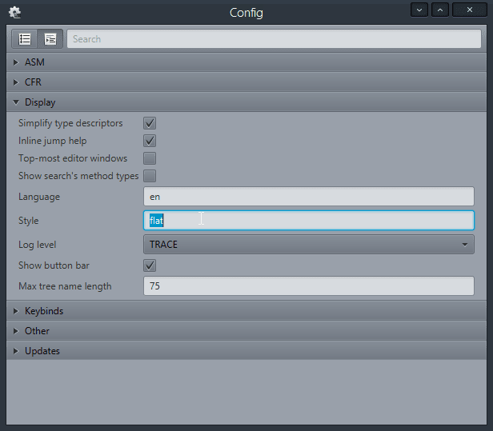
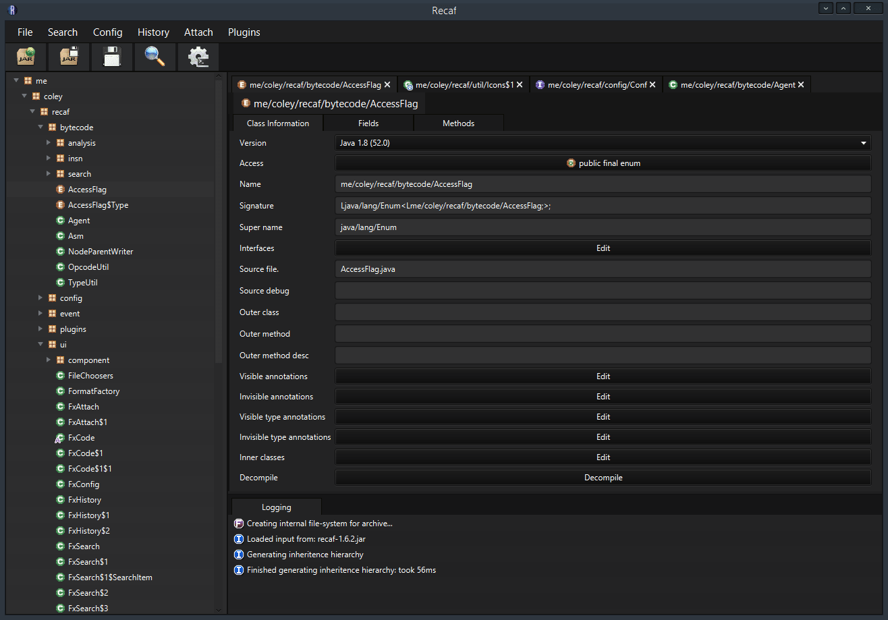
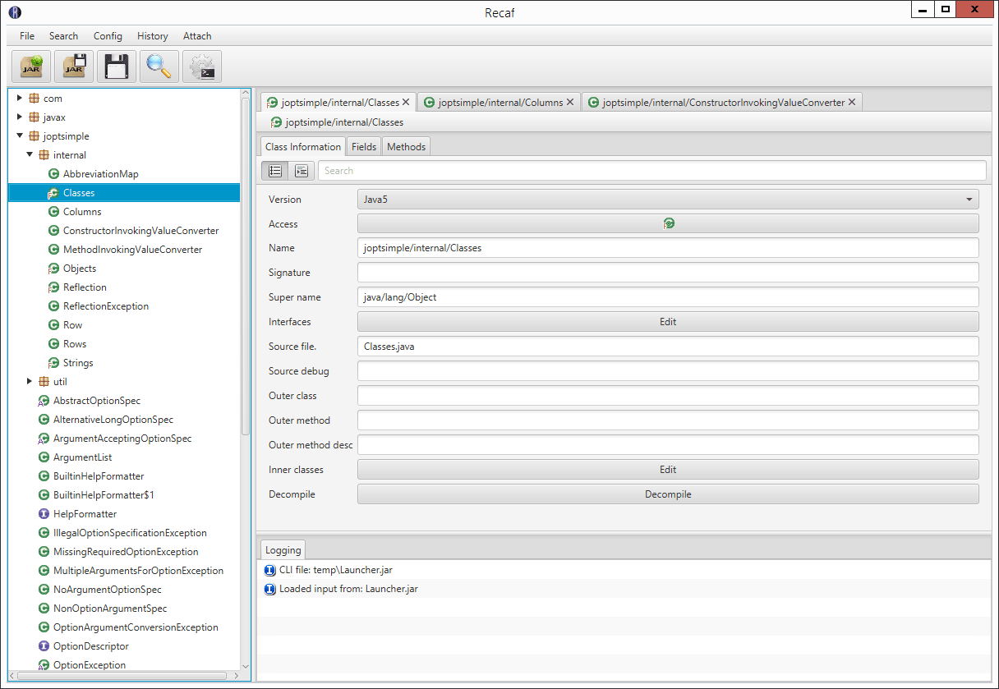

Themes & Custom Styles
JavaFX allows components to be styled using CSS. Recaf comes with two stylesheets flat and night. Both can be specified on the options panel under Display. The value in the option field specifies the suffix to use for files located in src\resources\style. If the file does not exist, the flat theme is used as a default. Alterntively you can specify none to use the default JavaFX style.
To create your own style, copy an existing theme's CSS and edit to your liking. Tags are sorted into groups and have some comments explaining choices made for the styles and where they are used in the UI.
References
Examples
Flat theme

Used by specifying flat as the style in the display config.
Night theme 
Used by specifying night as the style in the display config.
Default JavaFX theme 
Used by specifying none as the style in the display config.